Fun with Filters and Frequencies
Every operation here starts from the same primitive — 2D convolution — and builds up from there: finite-difference edges, derivative-of-Gaussian filters, unsharp masking, hybrid images that swap identities depending on how far away you stand from the screen, and multiresolution blending that stitches two images together with no visible seam by working frequency band by frequency band instead of pixel by pixel.
Convolutions from Scratch
Three implementations of the same zero-padded, kernel-flipped
“same” convolution — a naive four-nested-loop version,
a two-loop version that vectorizes over the kernel window, and
scipy.signal.convolve2d as ground truth — run on a
9×9 box filter and a pair of finite-difference kernels.
def convolve_4loops(im, kernel):
img_h, img_w = im.shape
ker_h, ker_w = kernel.shape
kernel = np.flipud(np.fliplr(kernel))
pad_h = (ker_h - 1) // 2
pad_w = (ker_w - 1) // 2
padded_im = np.pad(im, ((pad_h, pad_h), (pad_w, pad_w)), mode='constant', constant_values=0)
output = np.zeros((img_h, img_w))
for x in range(img_h):
for y in range(img_w):
for i in range(ker_h):
for j in range(ker_w):
output[x, y] += padded_im[x + i, y + j] * kernel[i, j]
return outputdef convolve_2loops(im, kernel):
img_h, img_w = im.shape
ker_h, ker_w = kernel.shape
kernel = np.flipud(np.fliplr(kernel))
pad_h = (ker_h - 1) // 2
pad_w = (ker_w - 1) // 2
padded_im = np.pad(im, ((pad_h, pad_h), (pad_w, pad_w)), mode='constant', constant_values=0)
output = np.zeros((img_h, img_w))
for x in range(img_h):
for y in range(img_w):
region = padded_im[x:x + ker_h, y:y + ker_w]
output[x, y] = np.sum(region * kernel)
return output


np.allclose confirms all three implementations agree
exactly. Measured wall-clock time for the 9×9 box filter on the
960×1280 selfie (1,228,800 pixels, 81 taps each):
- 4 nested loops: 68.4s
- 2 loops (vectorized kernel window): 9.6s — ~7× faster
- scipy.signal.convolve2d: 0.32s — ~210× faster than 4-loop
The four-loop version pays Python's per-operation overhead
H×W×kh×kw times —
almost 100 million individual scalar multiply-adds, each one a full
Python bytecode dispatch. Replacing the two innermost loops with a
single np.sum(region * kernel) moves that same work into
C, leaving only H×W Python-level iterations — a
~7× speedup for free. Scipy goes further still: convolve2d
is a single compiled call with no per-pixel Python round-trip at all,
so it's over two orders of magnitude faster than the naive loop.
All three use the same boundary convention — the image is
explicitly zero-padded by (k−1)/2 on each side
before sliding the kernel (np.pad with
constant_values=0 in the loop versions,
boundary='fill', fillvalue=0 in scipy) — which is
why they match pixel-for-pixel. Zero-padding treats everything
outside the frame as black, which pulls the blurred result darker
near the edges (visible as a faint vignette in the box-filtered
selfie above); a reflect or edge boundary
would avoid that darkening but no longer matches scipy's default
convention exactly.
Finite Difference Operator
Convolving the cameraman with the same [−1, 0, 1] finite-difference kernels gives partial derivatives in x and y; their magnitude locates edges, and thresholding turns that into a binary edge map.


50/255 was chosen as the point that keeps the cameraman, camera, and tripod as continuous outlines while mostly suppressing the high-frequency noise in the grass. A raw finite difference has no notion of scale, so it responds just as strongly to one noisy pixel as to a true object boundary — there's no threshold that gets a perfectly clean silhouette and a noise-free background from this operator alone, only a tradeoff between the two, which Part 1.3's Gaussian pre-blur addresses directly.
Derivative of Gaussian (DoG) Filters
Blurring before differentiating suppresses exactly the high-frequency noise Part 1.2 struggled with. Convolution is associative, so blur-then-differentiate can be collapsed into a single derivative-of-Gaussian kernel — the Gaussian pre-convolved with each finite-difference kernel.


Left to right: the 9×9 Gaussian (σ=1.5), DoG/∂x, DoG/∂y — each upsampled with nearest-neighbor so individual taps are visible.


Compared to Part 1.2's raw finite differences, the blurred gradient magnitude is visibly cleaner — the grass no longer registers as a field of bright specks — which is why the binarized version here uses a lower threshold (25/255 vs. 50/255) and still comes out less noisy. Blurring trades edge sharpness for noise rejection: fine texture gets smoothed away along with the noise, but the object boundaries that survive are more reliable.
Convolving with the single DoG kernel and convolving with the
Gaussian then the difference kernel agree almost everywhere —
interior pixels differ by at most ~0.007 (on a [0,1] scale). They're
not bit-identical only at the border: two sequential
'same'-mode, zero-padded convolutions each introduce
their own edge padding, which isn't quite the same as one
'same'-mode convolution with the composed kernel, so the
outermost few pixels disagree by up to 0.37. Everywhere convolution's
associativity actually applies — away from the border —
the two routes to the same DoG filter land on the same answer.
Image “Sharpening”
Unsharp masking boosts high frequencies by subtracting a blurred copy
from the original to isolate the high-frequency residual, then adding
a scaled copy of that residual back on top: a single convolution with
(1 + a)·impulse − a·gaussian.


Red was picked as the second image because it's flat, saturated cartoon color instead of a photograph — almost all of its “edges” are hard boundaries between two solid colors, which makes unsharp masking's halo/ringing behavior much easier to see than on a photographic source like the Taj Mahal.


The blurred copy keeps only an image's low frequencies; subtracting
it from the original leaves just the high-frequency residual —
edges, texture, noise. Unsharp masking adds a extra
copies of that residual back onto the original, so edges get a
brighter bright side and a darker dark side without touching the
smooth regions the residual is near-zero in. As a grows
the effect stops looking like sharpening and starts looking like
edge ringing — visible as a bright/dark halo tracing every
flat-color boundary on Red (the black eyebrows, the beak, the ear)
by a=10, since the filter is boosting a band of
frequencies, not literally adding resolution that was never
captured.
Evaluation: blur a sharp image, then try to sharpen it back
A more direct test of what the filter can and can't recover: take a sharp image, blur it, then run the exact same unsharp mask on the blurred result and compare it against the untouched original.
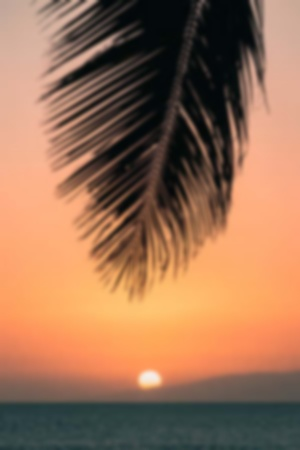
Blurring and unsharp-masking are not inverses of each other — a Gaussian blur genuinely discards information (a low-pass filter has no exact inverse), so no amount of unsharp masking gets the finest palm-frond tips back exactly as they were. What it does instead is boost contrast along whatever edges survived the blur, which reads as “sharper” at a glance but leaves visible ringing right where the finest detail used to be — compare the frond tips in the reconstruction to the crisp original above: the thickest fronds recover their edges reasonably well, but the thinnest ones come back as faint double lines rather than single sharp strands.
Hybrid Images
A hybrid image low-pass filters one aligned photo and high-pass filters another, then sums them: up close the high frequencies (fine detail, edges) dominate perception, but squint or step back and the low frequencies (coarse shape) take over instead. Alignment (center, scale, rotation) comes from two corresponding points picked in each image — here, both eyes.
Derek + Nutmeg


Speed + Speed Smile


Landscape + Josh — favorite result, full process


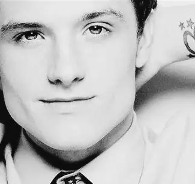
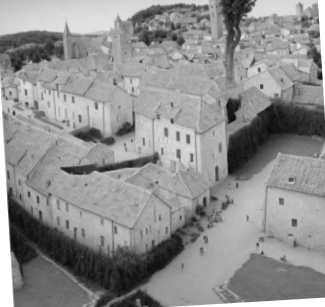
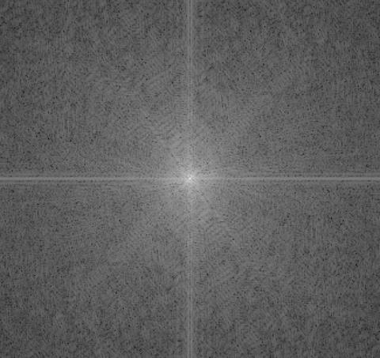
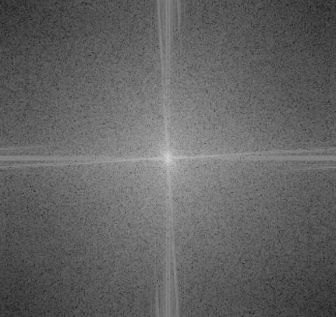
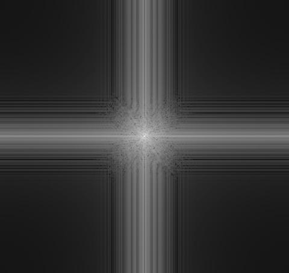
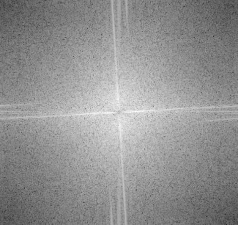
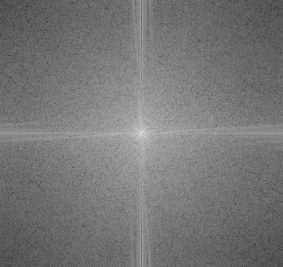
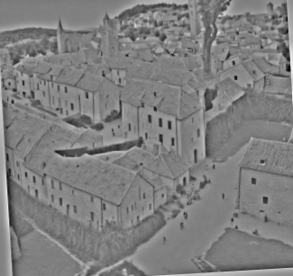

Cutoff frequencies (σlow=3 for Josh, σhigh=5
for the landscape) were chosen by trial and error against the
strength of the illusion: too low a σ on Josh and his own
facial edges compete with the village's rooftops for attention up
close (the same failure mode visible in the Speed pair above, at
σ=1.5); too high a σ on the landscape's high-pass and its
residual gets so faint the streets and rooftops disappear even at
close range. The kernel size scales with σ (the same
2·ceil(3σ)+1 rule used for the
Gaussian/Laplacian stacks later in the notebook) rather than staying
fixed, so the blur is real rather than truncated by too small a
kernel. The FFT spectra confirm the intent: Josh's low-passed
spectrum concentrates energy near the origin (low frequencies), the
landscape's high-passed spectrum is hollowed out at the center, and
the hybrid's spectrum is essentially their sum.
Gaussian and Laplacian Stacks
A stack is a pyramid without the downsampling: every level is
produced by convolving the previous level with the same
Gaussian kernel again, so each level is more blurred than the last
but all of them stay at the original image's full resolution —
no cv2.pyrDown, no skimage.transform.pyramid_gaussian,
just repeated convolution. The Laplacian stack is the running
difference between consecutive Gaussian levels (each one a band of
detail the next level's extra blur just erased), with the final,
most-blurred Gaussian level kept as-is as the last entry — sum
every level of the Laplacian stack back up and you get the original
image exactly.
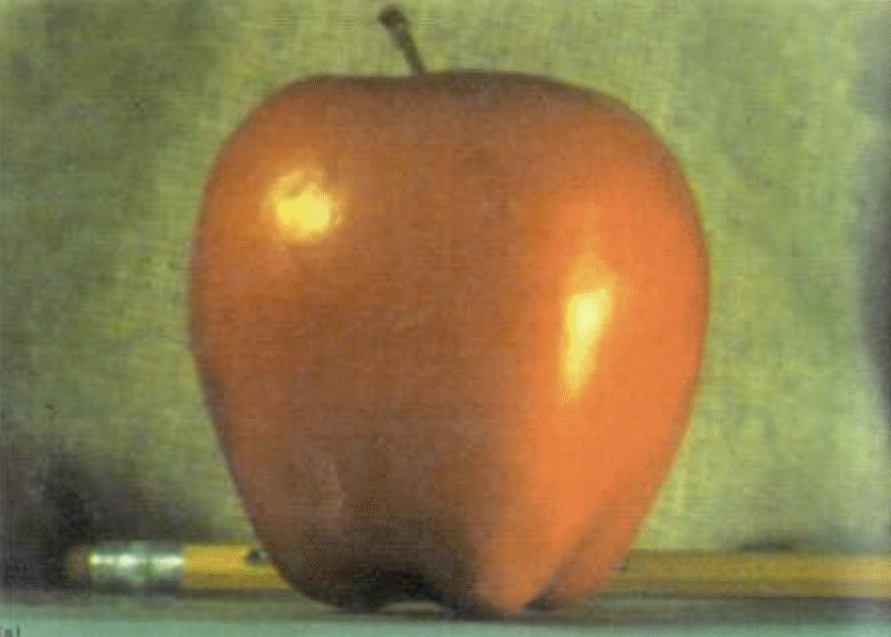
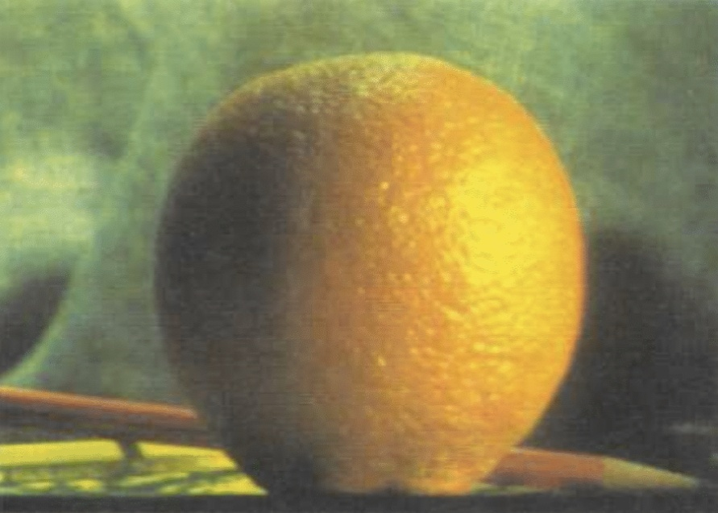
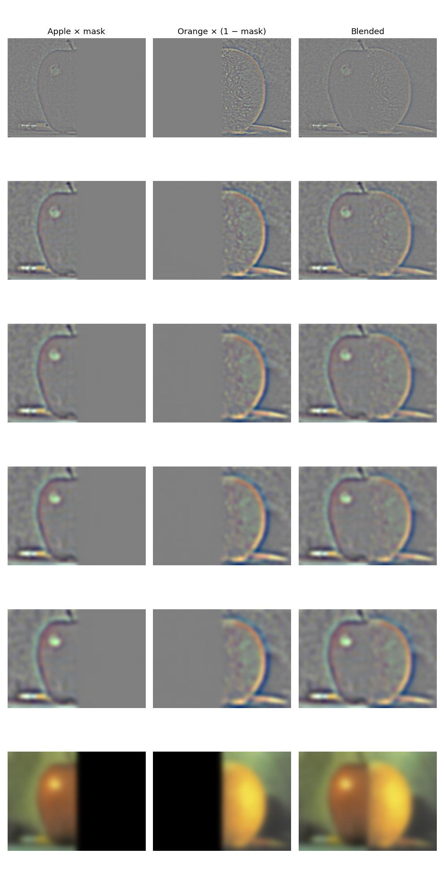
mask·Lapple), orange's masked contribution ((1−mask)·Lorange), and their sum, the actual blended level — not each fruit's raw, unmasked Laplacian level. Every non-final row is a signed detail band on a neutral grey field (0 → mid-grey, matching the original figure); the final row is the plain, non-negative low-pass image both stacks converge to, so its masked-out half is genuinely black rather than grey.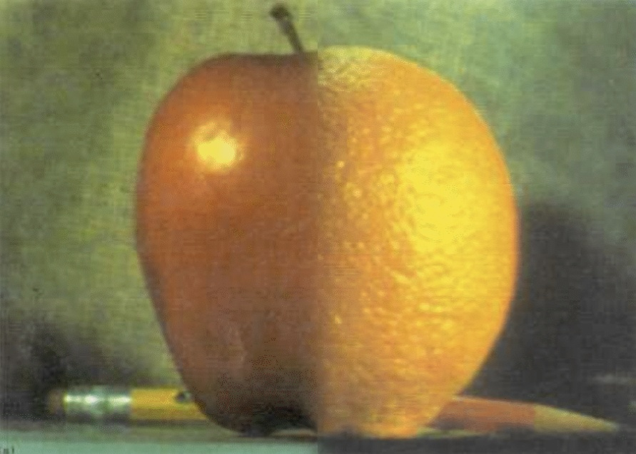
Blending happens independently in every frequency band: the finest Laplacian levels (top rows above) are blended with a sharp, nearly-unblurred mask, so the boundary between the two fruits stays crisp in fine texture; the coarsest level (bottom row, the plain low-pass image) is blended with a mask that's been blurred almost into a smooth gradient, so the two fruits' overall color and shading fade into each other gradually instead of meeting at a hard edge. A single-resolution blend has to pick one of those two behaviors for the whole image; blending stack-by-stack gets both at once, which is the entire point of doing it in the frequency domain rather than directly on pixels.
Multiresolution Blending
The Burt–Adelson algorithm: build a Gaussian stack for a mask
the same way as for the two images, then blend the two Laplacian
stacks level-by-level with mask·L1 + (1−mask)·L2
— the mask itself gets blurrier at coarser levels right along
with the images, so the blend transitions smoothly in low frequencies
even where the mask's edge is a hard step. Summing the blended stack
back up gives the final image. The oraple above used a straight
vertical-line mask to debug the pipeline against a known-good
result; the two pairs below use masks that are not a
straight line.
Sun + Moon — favorite result, full process
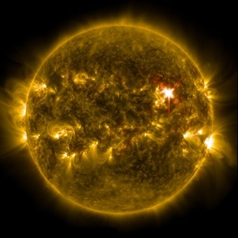
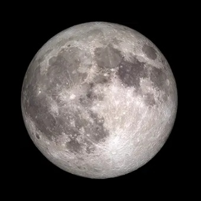
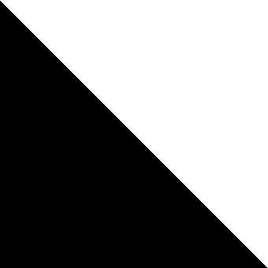
The sun (star.jpg) and moon (moon.jpg)
photos don't share a scale any more than the hybrid-image faces in
Part 2.2 did: cv2.HoughCircles measured the sun's disc
at radius 132 on its 340×340 canvas and the moon's at
radius 148 on its own 300×300 canvas. align_circle_to
(the same idea as align_face_to in Part 2.2, keyed on
a circle's center/radius instead of an eye pair) rescales and
recenters the moon onto the sun's canvas so the two discs land at
an identical size and position before the mask ever touches them
— skip this and no amount of blending hides one disc being
visibly bigger than the other.
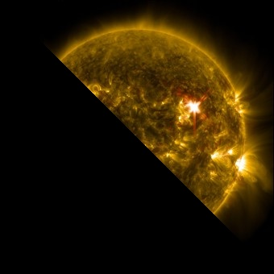
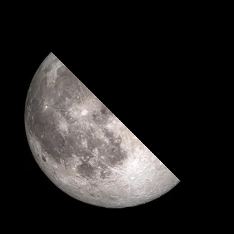
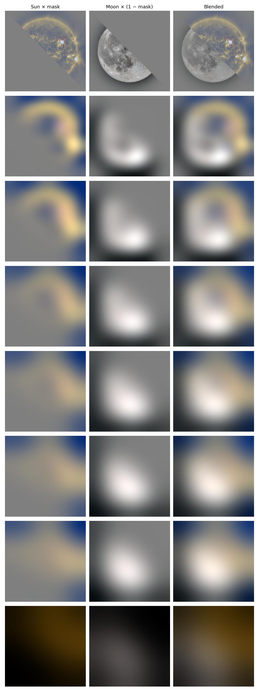
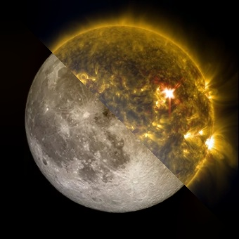
The first pass at this used σ=10 over 6 levels and still showed a visible seam along the diagonal, even with the circles perfectly aligned. Unlike the vertical-band Eiffel attempt earlier (where the flanking regions were large, low-texture skies), the sun and moon both carry real fine-grained texture — craters, plasma granulation — right up to the seam on both sides, so the finest Laplacian levels (which intentionally use the least-blurred mask, to keep genuine detail sharp) still show a fairly defined transition there. Pushing to σ=30 over 8 levels widens that transition noticeably without smearing detail in the untouched regions of either disc — verified by comparing crops of the pure sun/moon areas before and after, not just eyeballing the seam.
Seasonal tree — a unique mask
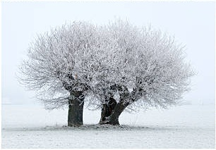
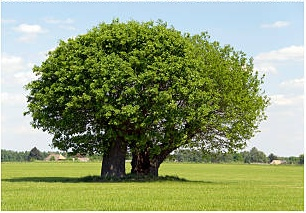
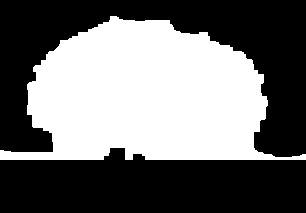
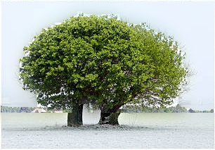
Both source panels are cropped from the same seasonal_trees.jpg
collage — a single tree photographed across four seasons in
a 2×2 grid — so the winter and summer shots already
share a compatible framing and scale, no alignment step needed.
Restricting the green-hue threshold to the canopy (cutting off the
grass field, which is also green) mattered: without that cutoff
the mask covers almost the entire frame, and the blend reads as
“summer with a few gaps,” not a wintry field with a
summer tree standing in it. The canopy's irregular, leafy edge
turns out to be a forgiving boundary for multiresolution
blending — unlike a razor-straight mask edge, its natural
raggedness already resembles the kind of soft transition the
algorithm produces, so the blend reads as seamless even at a
modest σ=6.
The Most Important Thing I Learned
Every technique in this project — unsharp masking, hybrid images, multiresolution blending — is the same idea applied at a different scale: decompose an image into frequency bands, treat each band differently, then recombine. Unsharp masking boosts one band (the high-frequency residual). Hybrid images keep one band from each of two photos. Multiresolution blending goes further and blends every band independently, each with a mask blurred to match that band's own scale, which is exactly why it succeeds where a single-resolution blend can't: a sharp mask keeps fine texture crisp right up to the seam, while a heavily blurred version of the same mask lets coarse color and tone drift smoothly across it, and no single mask sharpness can do both at once.
The debugging that stuck with me most came from forgetting this
principle, not from misusing it. Pre-softening a mask into a smooth
analog gradient before handing it to multires_blend —
instead of a hard 0/1 step and letting the algorithm's own per-level
Gaussian stack do the softening — quietly broke the finest
Laplacian levels: they blended with an already-partial mask instead
of a solid one, and fine detail (a beard's edge, a cloud's texture)
ghosted into the other image instead of staying sharp. The fix
wasn't more blur; it was trusting the algorithm to build its own
frequency-appropriate softness at each level, rather than
pre-deciding how soft the seam should look.